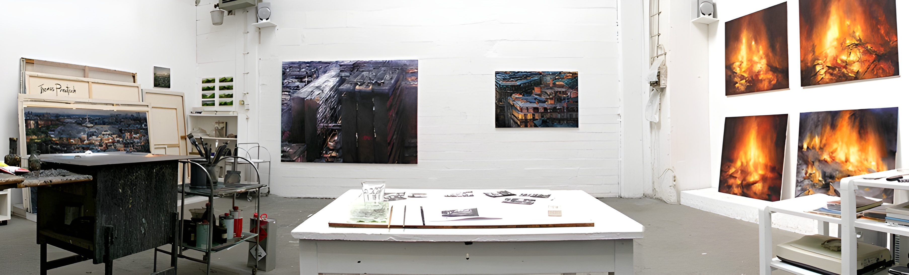
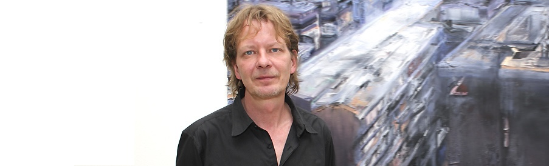

Willkommen
Zeitgenössische Kunst und Malerei.

Vita & Preise
Biografie
- 1965 geboren in Frankfurt a.M.
- 1988-1999 Studium an der Kunstakademie Münster bei L.v.Arseniew und Timm Ulrichs
- 1990-1991 Aufenthalt in Berlin
- 1999 Akademiebrief, Meisterschüler
- Lebt und arbeitet in Münster
Preise & Stipendien
- 2000 Graduiertenstipendium des Landes NRW
Caspar-von-Zumbusch-Preis - 1996 Irland-Stipendium der Stiftung Hillmoth-Gocke
- 1995 Stipendium der Stiftung Kulturfonds Mecklenburg
Italien-Stipendium der Kunstakademie Münster - 1994 Atelierstipendium der Stadt Münster
Förderpreis des Landschaftsverbandes Westf. Lippe
Ausstellungen (Auswahl) anzeigen
- 2021 / Engelsgleich, No Cube; Münster
- 2020 / under constuction, Ahlen
Baltic Bridges 8`International Watercolour Biennial 2020, Kaunas - 2019 / Ausstellung zum Wilhelm-Morgener-Preis, Wilhelm-Morgener-Haus, Soest
Lichtecht, Dr. Carl Dörken Galerie, Herdecke
Schönes Wohnen, No Cube Schauraum für Kunst und Medien, Münster
Sichtweiten, Wetdeutscher Künstlerbund, Osthaus Museum, Hagen - 2018 / Im Licht ist der Schatten tiefer, Kunstverein Melle
7`Baltic Bridges International Watercolour Biennial 2018, Kaunas
Hier und Jetzt, Gustav-Lübcke-Museum, Hamm
Feuer in Öl, Kunstverein Steinfurt
Thomas Prautsch - Malerei, Kunstverein Greven - 2017 / Landschaft zu Landschaft, Haus Villigst, Schwerte
Wendy, Ausstellung zur Skulptura 2017, Ausstellungshalle am Hawerkamp, Münster - 2016 / Glasig, No Cube, Schauraum für Kunst und Medien, Münster
Lichtspiele, Theater Münster
Schwerer Mut – Leichter Spott, Künstlerhaus Dortmund, Dortmund
Handspiele, Schauraum 2016, Nacht der Museen und Galerien, Münster - 2015 / Stadt_Werke, No Cube, Schauraum für Kunst und Medien, Münster
Postkarten künstlerisch, FAK, Münster
Münsteraner Hängung ll, Ausstellungshalle Hawerkamp, Münster - 2014 / Fotokunst 2.0, Fotografie/Malerei, ArtHaus, Schloß Ahaus
HDLU, Zagreb, Kroatien
Falscher Hase, Galerie Münsterland, Emsdetten
von anderer Weise, Ausstellungshalle Hawerkamp, Münster - 2013 / Stadtlandschaften, Stadthausgalerie Münster
Facettenreich, Oberlandesgericht Hamm
Wir wieder Hier, westdeutscher Künstlerbund, Kunstmuseum Bochum
Kunst im Kleinformat, Atelier Schwerinstraße, Düsseldorf
15 Jahre Förderverein Aktuelle Kunst, Münster - 2012 / Hier und Jetzt, Gustav-Lübcke-Museum, Hamm
Ansichten, Kunstverein Ahlen - 2011 / Gocart Gallery, Visby, Schweden
Wasser-Land-Luft, Kunstverein Leimen
Stadtansichten, Wohn und Stadtbau, Münster - 2010 / Landpartie, Kunstmuseum Ahlen, Westdeutscher Künstlerbund
Jahresgabenausstellung des Fördervereins Aktuelle Kunst, Münster
Eröffnungsausstellung der Ateliergemeinschaft Schulstraße, Münster - 2009 / Feuer und Flamme, Generatorenhalle, Niederrheinwerke Viersen
Stadtlandschaften, Galerie Meta Weber, Krefeld
Meno Parkas Galerie, Kaunas, Litauen
Neue Landschaften, Thyssenkrupp Steel AG, Duisburg
Art Karlsruhe 09, Galerie CP, Karlsruhe - 2008 / Forum Treppe, Spitzbart Ausstellungshalle, Oberasbach/Nürnberg
Modell und Wirklichkeit, Städtische Galerie im Rathaus Lippstadt
Art Karlsruhe 08, Galerie CP, Karlsruhe - 2006 / 175 Jahre westfälischer Kunstverein, westfälisches Landesmuseum, Münster
Stadtbilder, Tapetenfabrik, Bonn - 2005 / Mit offenem Ende, Kunsthalle Recklinghausen
WKB, Verein für aktuelle Kunst, Oberhausen
Naturlich, Galerie CP, Wiesbaden - 2004 / Galerie Schneider, Bonn
- 2003 / Galerie Elitzer, Saarbrücken
- 2002 / Galerie Dis, Maastricht, NL
Jahresgaben 2002, Kunstverein Ahlen
Künstler, Knöpfe II, Museen der Stadt Lüdenscheid - 2001 / Sammlung der Provinzial Versicherung, Westfälisches Landesmuseum, Münster
Jahresausstellung Vischering, Lüdinghausen
Ausstellungbeteiligung zum Lukas-Cranach-Preis, Kronach - 2000 / Zitadelle Spandau, Berlin
Jahresausstellung des Westdeutschen Künstlerbund, Lüdenscheid
Ausstellung zum Caspar-von-Zumbusch-Preis, Herzebrock - 1999 / multiple choice, Werrethalle, Löhne
Auf der Bildfläche, Heiligenkreuzerhof, Wien
Malerei, Galerie König, Münster - 1998 / Schauplätze, Westdeutscher Künstlerbund, Flottmann-Halle, Herne
Schnittstellen, Mineralogisches Museum, Münster - 1997 / Kunststudenten stellen aus, Bundesministerium für Wissenschaft und Forschung, Kunsthalle, Bonn
- 1996 / Städtische Galerie des Emschertal-Museums, Herne
Museum Abtei Liesborn, Wadersloh-Liesborn
Unterwegs, Künstlerwerkstatt, München
Ausstellung der Atelierstipendiaten 1994-96, Städt. Ausstellungshalle, Münster
Skulpturenmuseum Glaskasten Marl
Lage der Dinge, Westdeutscher Künstlerbund, Gustav-Lübke-Museum, Hamm
Dialog, Königliche Kunsthochschule, Stockholm - 1995 / Ausstellung zum Wilhelm-Morgen-Preis, Wilhelm-Morgener-Haus, Soest
Meisterschüler in westfälischen Schlössern, Gut Opherdicke, Unna
Malerei, Förderpreisausstellung des Westfälischen Kunstvereins, Münster - 1994 / Ausstellung zum Ida-Gerhardi-Preis, Städtische Galerie Lüdenscheid
Spektakel 94, Museum am Ostwall, Dortmund - 1993 / Ausstellung zum Max-Ernst-Stipendium, Galerie am Schloß, Brühl
Passion, Bernward-Preis, Roemer- und Pelizaeus Museum, Hildesheim
Kontakt & Atelier

Atelier:
Am Hawerkamp 31, Haus A
48155 Münster